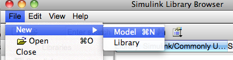
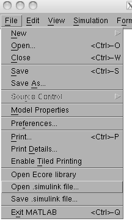
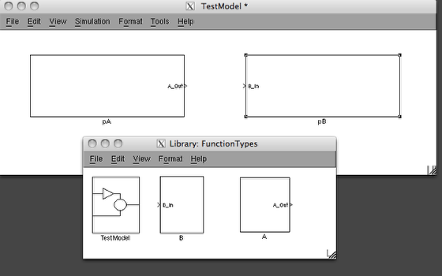

Converting from intermediate format .simulink to MATLAB
How to convert a model in an intermediate representation to a simulink model.
Change to proper folder

The conversion process creates files, so be sure to start the operation from a writeable folder. In this case, the output folder will be the same folder where the intermediate file is located.
Tip: If you choose the Eclipse project folder, where the UML file is located, you can save an extra step when you are converting back from MATLAB to Eclipse.
Create a new simulink model

Open a simulink file

From the file menu, open a simulink file.
The result
